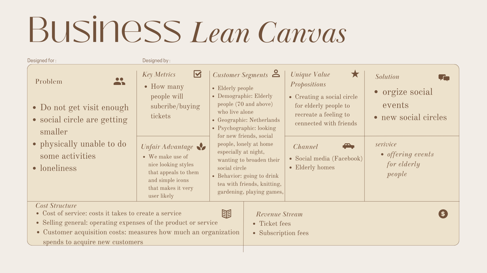

General Information
This branded website is publicly available at buas-media-interactive.github.io/my-website (please change text and hyperlink destination)
This website was created by…
- Nine van de Haterd (ID: 212501)
- Mabel van den Broek (ID: 212465)
- Chavdar Borachev (ID: 210901)
- Annebelle Linders (ID: 212665)
Content
| # | Student ID | Value | Name and link of content |
|---|---|---|---|
| 1. | 212501 | Community | Value page |
| 2. | 212465 | Sincerity | Value page |
| 3. | 210901 | Positivty | Value page |
| 4. | 212665 | Connection | Value page |
Production
Design Elements
-
A colour scheme
- #5E3923
- #9B6B43
- #F8EEE5
- #CEA289
- #603F23
We chose a brown color scheme, because these colors resemble antique furniture and homes which give a warm feeling to our target audience. It will also give them a homey feeling and a feeling of recognition. Because our target audience is 70+ we also do not want to overload them with bright colors, because these can be very distractive. Because our target audience is not comfortable with online programs we want our website to look as easy and clear as possible.
For the fonts, we also wanted to create a feeling of recognition and a nostalgic feeling. This is why we chose fonts that have aspects of calligraphy writing. This is the writing our target audience learned in school. We especially did this for the logo, so that when people see our brand they immediately get nostalgic feelings. Besides this, we wanted to have an easy-to-read font for the website, but with a touch of calligraphy. This is why we chose Lust Text for the website. For the Facebook posts, we wanted a bit more playful font. This is why we chose Old Standard. It has a bit more calligraphy curls and is a bit thinner.
To make the web interface easy to use for our users we decided to make use of several UX and UI elements. For the navigation bar we have drop down menu with all of the stuff related to our brand. A carrousel is found on our homepage to showcase a proper viewing of what are brand is and what the values are that we stand for. Besides those we also made use of a grid to display our members' photos and to display our social media posts. Finally we made use of multiple buttons that are linked.
We divided the content over the website by looking at what is suitable to put together. We decided to put all of the content that is directly related to our brand and subscription together and keep the 'About us' on a seperate page.
The designs that we chose are very simple and self explanatory, this ties in with our Value of Sincerity. We do not want to mislead or misrepresent the brand to our audience. To prevent this we kept the idea of having clear and sleek designs in mind when choosing the colours and designs. Our communication strategy played a part in this as we wanted to make it as appealing as possible while also maintaining an alluring position in order to not throw people off. Lastly, the chosen colour palette supports the idea that we combat loneliness amongst elders as the colours give off a very warm and home like feeling. As mentioned before that was done because we are a brand that spreads connection and positivity.
Credits
All of the used pictures that we do not own are from Unsplash.
- Slide 1 carousel: By Mariia Chalaya Photo Link
- Slide 2 carousel: By Abi Howard Photo Link
- Slide 3 carousel: By Abi Howard Photo Link
- Slide 4 carousel: By Tiago Muraro Photo Link
- Slide 5 carousel: By Bruce Mars Photo Link
Testing Report
Testing goals We want to learn if the user interface we used is clear and easy to use. Besides this, we want to learn what the target audience thinks about the look and feel of the website; what feeling it gives them.
Test participants We tried to find people to test the site in person with people from our target audience. Unfortunately, we were able to only find one. Since we wanted to test the site as good as possible, we decided to test it via students. This is not our target audience, but they were able to test the site on if it is sufficient or not and if it is clear and easy to use.
Test participant 1 Sterre Fleuren is a 20-year-old creative business student. Unfortunately, she does not fit our target audience, but we still wanted her to test it to make sure the website works as it is supposed to work.
Test participant 2 Mauro is a 20-year-old creative business student. Unfortunately, she does not fit our target audience, but we still wanted her to test it to make sure the website works as it is supposed to work.
Test participant 3Pedro is a 72-year-old man who is a retired factory worker. He lives alone in Breda in an elderly home. Pedro would like to be in social clubs, but unfortunately, he has not found any that fit his interests. The clubs he got in contact with are mostly for people who are physically able to do things like morning gymnastics. He likes to do games with friends and broaden his social circle which makes him perfect as our target audience.
The setting For the testing, we used the laptop of one of our teammates. We opened the website on the home page and let the test participants do the rest. The testing with test participants 1 and 2 was done on campus, but the testing with test participant 3 we did in his elderly home. We gave all of the participants the following two tasks: Subscribe to our brand Find information about the GranTea team, what kind of person is Nine? We chose to do one broad and quite easy test and one harder and specific test to make really make sure the website was working as it should be working. Besides this, we asked all of the participants which feeling they got from the looks and color of the website. We recorded the tests with test participants 1 and 2 via a mobile phone in a way we can see the website on the screen of the laptop on the recording. With test participant 3, which was actually the first test we had, we did not think of recording the screen with the website on it. This is something we really should have done, but completely forgot about in the moment.
Testing results The positive thing we took away from the testing is that all of the participants were able to easily do the tasks given. They said the website was clear and easy to use. When we asked about what kind of feeling our website gave the test participants, they said it gave a homely feeling. They also said that they assumed the colors we used with the older generation, which is our target audience. The most important positive thing we take away from the testing is the feeling our website gave the participant, followed by the assumption of the color with elderly people, and how easy the website was to use. The negative thing that we noticed during the testing was that all participants tried to click on the logo to go back to the home page, which we did not think to link. Besides this, we noticed it was not clear which information belonged to which person on the about us page. We could try to make this clearer, because now the participants all had to search in a big amount of text. This would be especially helpful for our target audience since online innovations are already hard for them to follow. This is then also the most important thing we take away from the testing, followed by linking the logo to the home page.
Marketing
Context of campaign and promotional activities
Explain the context of the campaign is (What the campaign is about, what the message is, which promotional activities were executed). In addition, present the objectives as mentioned in the Communication Media Plan.
Explain and justify the chosen channels/platforms used and show there is a solid connection to the objectives established in the Communication Media Plan.
Learning Points
Future Planning
We have been posting different types of posts; videos, reels, photos, and stories consistently throughout the past weeks. If the campaign had continued furthermore, we would have changed several things.
For sure we would have focused more on reels and videos, because as we stated above, with reels we had the most reach. We would focus on videos more, because we feel like this would create a better engagement. Keeping this in mind, we may have started posting more often, even every day. We would do this, because as said previously we noticed a bog chance in reach after we started posting regularly.
Besides this, posting in different Facebook groups for elderly people and elderly homes is something we could have done and for sure would have done if the campaign was continuing. In these Facebook groups we could connect with people who have the same interests of our target audience. We could post about and promote our Facebook page in these groups so we can attract the actual target audience we are aiming for. Right now we are noticing that a lot of our followers, if not all, are our friends and family supporting us and not our actual target audience. Moreover, asking questions directly to our followers so we can create even more engagement. We have seen that we can create reach, but we have trouble with creating engagement.
In the future this will be something we would definitely focus on. Building up a relationship is something we would have definitely maintained if the campaign had continued. Besides all of this, we would implement more of a personal marketing. We would be posting about our GranTea team and who we are as persons. This would also lead towards more engagement, because of the personal touch this gives to our brand. In the end, we want the target audience to know our values; community, sincerity, positivity, and connection. We feel like we could have done this better and will try to focus on that in the future as well.
Professionalism
The posts are also posted and linked on our 'Social Media' tab but here is a link to our Facebook page.

Management
Lean Canvas
Problem
- From the problem interview, we found a couple of insights. The first insight was that our target group (elderly people living alone) don’t get visited as often as they would like to. Secondly, we found out that their social circle is getting smaller because of people around them dying or getting mentally unstable. Besides this, the digitalization of the social world is going too fast for them to keep up with their friends online, and if they do understand it, their friends often do not. At last, we found out that they become physically unable to join some clubs. All of these consumer insights lead to the big overall problem, loneliness.
Solution
- The solution to the problem of loneliness is creating a new social circle for our target audience. This is going to be done via our brand “GranTea”. “GranTea” is going to organize social events that display the feeling of tea time with friends. With these events we want elderly people to connect with each other and broaden their social circle.
Customer segments
- Our target audience is elderly people from age 70 who live alone. People from our target audience mostly use Facebook as a social media platform. They are part of the fastest-growing group when it comes to social media.
- Demographic: Elderly people (70 and above) who live alone
- Geographic: Netherlands
- Psychographic: looking for new friends, social people, lonely while they are alone at home especially at night, wanting to broaden their social circle
- Behavior: going to drink tea with friends, knitting, gardening, playing games, they consume when they talk about what they found on our social media or what they did during our events.
Unique value proposition
- With our brand, we really focus on bringing elderly people together to fight their loneliness. We focus on creating a social circle for elderly people instead of bringing them together with young people. We try to recreate a feeling of tea time with friends and doing fun things together. Because of the direct insights into the target audience, we know what is going on with them and we can use the current trends. We can also target the audience directly by placing marketing aspects like posters and invites in elderly homes. By doing this we make use of and stimulate mouth-to-mouth marketing.
Unfair advantage
- The target audience we target doesn’t make use of social media as much as other target audiences might do, but this does not mean it should be a disadvantage. We make use of a color scheme that our target audience recognizes and which appeals to them. We make use of simple icons and simple language for them to understand. Besides this, we have direct insights into the target audience due to collaborations with elderly homes. This is a good unfair advantage since not a lot of other companies have these insights.
Channels
- Because our target audience is an elderly target audience from the age of 70 and above, they do not use a lot of social media. The kind of social media they use the most according to our research and problem interviews is Facebook. This is why we chose Facebook as our main channel to communicate with our target audience. Besides this, there will be alliances made whit elderly homes to hang up posters and sign-up sheets for our events.
Key metrics
- The key metrics are the points we can check by how well we are doing as a brand. Because our products are events the number of people attending or the people signed up for the events would be a good key metric. Besides this, we can track how many people we reach on our socials via our marketing. We can check this by checking the number of people who are following us on Facebook. This goes hand in hand with the engagement we have on our Facebook account and how many people we reach. We can check all of these statistics via Mate Business Suite.
Revenue streams
- We want to create revenue through both ticket sales and a subscription with monthly payments. This means that the customers who have a subscription will get a discount on tickets to the events. By doing this we are making sure we can be a viable business because, with only ticket sales, we are probably not going to cover all the costs of organizing an event, marketing, employee costs, etc.
Cost structure
- Cost of service Cost of service is the cost it takes to create one service, for example, how much it costs to create and organize one event. This can be the costs of venue, organizing, props, etc. These are also the costs it takes to create the subscription we offer.
- Selling general; administrative and others Selling general; administrative and other costs are the costs that form the operating expenses of a product or service (Selling Expenses, 2021). Operating expenses are the expenses a company makes for keeping the company operating. The company needs to keep operating, when the sales are low or high. This means that, because we are a company that sells something, we will have these kinds of costs.
- Customer acquisition costs Customer acquisition cost measures how much an organization spends to acquire new customers. Because we are constantly trying to attract new customers to our brand, we are constantly making customer acquisition costs.
Services/products
Our company, called GranTea, is dedicated to bringing people together and fostering meaningful connections through our events. We believe that community is essential for personal growth and well-being, and that authentic connections are the foundation of strong communities.
We infuse positivity and sincerity into every aspect of our events, from the planning stages to the execution. We strive to create an environment where attendees feel welcomed, supported, and encouraged to be their true selves.
At GranTea, we take a unique approach to marketing by utilizing direct communication. We believe that building relationships and connecting with people on a personal level is the most effective way to spread the word about our events. We prioritize communication with our customers and work hard to make sure their experience is always top-notch.
Whether it's a small gathering or a large-scale event, we pour our hearts and souls into every project we take on. We're committed to creating experiences that leave a lasting impact on our attendees and the community as a whole.
Validation of Assumptions
At the beginning of the project, we tried to focus on a target group of 60 and above instead of 70 and above. We chanced this, because we noticed that there was too big of a difference between the two target groups. Where people between 60 and 70 are still very physically and socially active, people from 70 and above are way less. We decided to focus on this group, because this is the group that really experiences loneliness. Besides this, we taught that only ticket sale was going to be enough to make revenue, but when we really thought about it, we came to the conclusion that this would not be enough. This is why we decided to also include a subscription with a monthly payment to cover the rest of the costs.
Appendix